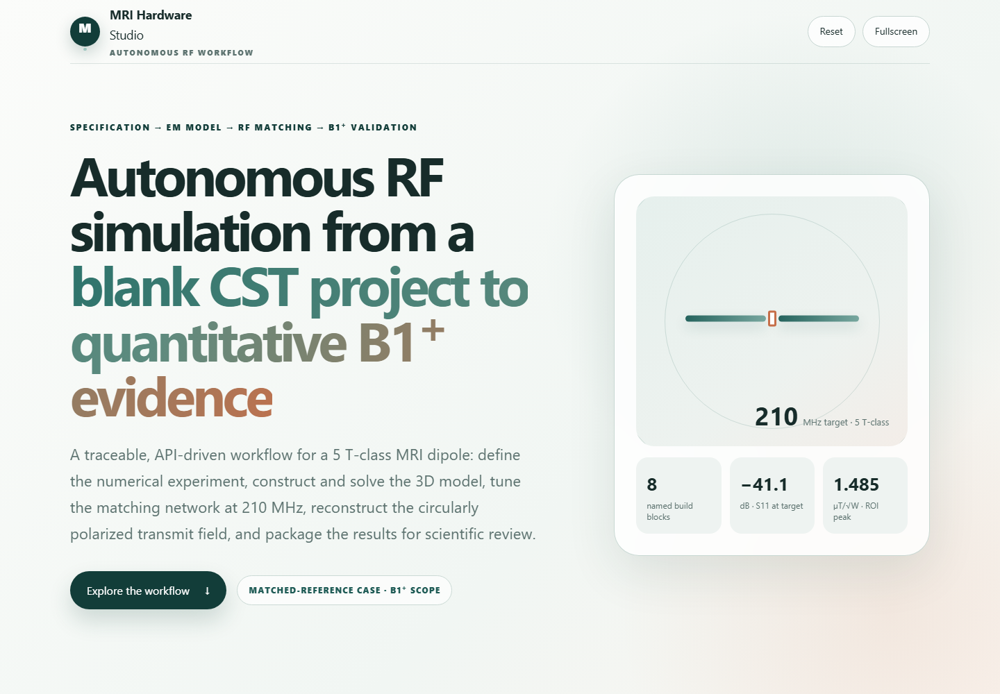
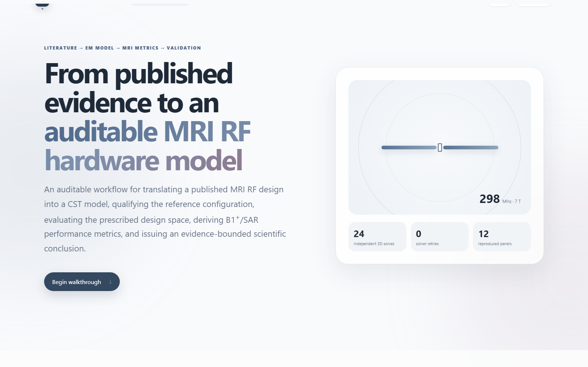

Dipole antenna from scratch
A blank CST project becomes a parameterized 5 T-class dipole model, matched circuit, and accepted-power-normalized B1⁺ evidence package.
Open walkthroughMRI Hardware Studio · Interactive evidence
Two browser-based walkthroughs expose the autonomous workflow, intermediate checks, normalization choices, visual evidence, and unresolved validation items—not only the final figure.

A blank CST project becomes a parameterized 5 T-class dipole model, matched circuit, and accepted-power-normalized B1⁺ evidence package.
Open walkthrough
A publication is translated into testable claims, deterministic parameter studies, quantitative comparisons, discrepancies, and next validation steps.
Open walkthrough